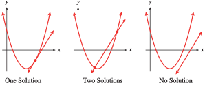
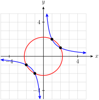
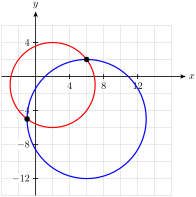
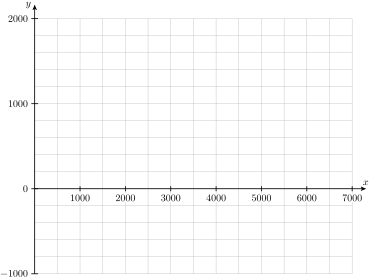
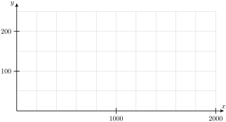

Recall that the solution to a \(2 \times 2\) system of linear equations is the intersection point of the graphs of the equations. This is also true of systems in which one or both of the equations is quadratic. The figure below shows the three cases for systems of one quadratic and one linear equation.

In Example 9.5.1, we use both graphical and algebraic techniques to solve the system.
Example9.5.1.
The Pizza Connection calculates that the cost, in dollars, of producing \(x\) pizzas per day is given by
\begin{gather*}
C = 0.15x^2 + 0.75x + 180
\end{gather*}
The Pizza Connection charges $15 per pizza, so the revenue from selling \(x\) pizzas is
\begin{gather*}
R=15x
\end{gather*}
How many pizzas per day must the Pizza Connection sell in order to break even?
the break-even points occur when revenue equals cost. In mathematical terms, we would like to find any values of \(x\) for which \(R = C\text{.}\) If we graph the revenue and cost functions on the same axes, these values correspond to points where the two graphs intersect. Use the WINDOW settings
on your calculator to obtain the graph shown below. You can verify that the two intersection points are \((15, 225)\) and \((80, 1200)\text{.}\)
Thus, the Pizza Connection must sell either 15 or 80 pizzas in order to break even. On the graph we see that revenue is greater than cost for \(x\)-values between 15 and 80, so the Pizza Connection will make a profit if it sells between 15 and 80 pizzas.
We can also solve algebraically for the break-even points. The intersection points of the two graphs correspond to the solutions of the system of equations
What about a system of two quadratic equations \(~y = ax^2 + bx + c~\text{?}\) You can sketch some possible systems to convince yourself that two such graphs can intersect in one point, two points, or no points at all.
Example9.5.3.
Solve the system
\begin{align*}
y \amp= (x + 1.1)^2\\
y \amp = 7.825 - 2x - 2.5x^2
\end{align*}
We graph these two equations in the standard window and use the intersect feature to locate one of the solutions, as shown in the figure.
You can check that the point \((0.9, 4)\) is an exact solution to the system by substituting \(x = 0.9\) and \(y = 4\) into each equation of the system. We find the other solution by moving the bug close to the other intersection point and using the intersect feature again. You can verify that the other solution is the point \((-2.1, 1).\)
To solve the system algebraically, we equate the two expressions for \(y\text{.}\)
After expanding the left side and collecting like terms, we arrive at a quadratic equation, which we can solve with the quadratic formula, and find two values for \(x\text{,}\) namely \(x = 0.9\) and \(x = -2.1\text{.}\) To find the \(y\)-value for each of these intersection points, we substitute the \(x\)-coordinate into either of the two original equations. For example, for \(x = 0.9\text{,}\)
A system of two parabolas can have one, two, or no solutions, depending on the graphs of the two equations. Systems involving other conics may have up to four solutions.
We will use substitution to solve the system. We solve the easier of the two equations(the second equation) for \(y\) to obtain \(y =\dfrac{2}{x}\text{.}\) Then we substitute \(\dfrac{2}{x} \) for \(y\) in the first equation to find
\begin{gather*}
x^2+\left(\frac{2}{x} \right)^2=5 \quad\text{ or }\quad x^2+\frac{4}{x^2} =5
\end{gather*}

This equation has only one variable, \(x\text{,}\) and we solve it by first clearing fractions. We multiply both sides by \(x^2\text{,}\) and then subtract \(5x^2\) to obtain
\begin{align*}
x^4-5x^2+4\amp=0 \amp\amp \blert{\text{Factor the left side.}}\\
(x^2-1)(x^2-4)\amp=0 \amp\amp \blert{\text{Apply the zero-facor principle.}}\\
x^2-1=0\quad\text{ or }\quad x^2\amp-4=0\amp\amp \blert{\text{Solve each equation.}}\\
x=1, \quad x=-1,\quad x=2\amp, \quad \text{ or }\quad x=-2
\end{align*}
Finally, substitute each of these values into \(y=\dfrac{2}{x} \) to find the \(y\)-components of each solution. The intersection points of the two graphs are \((1,2)\text{,}\)\((-1,-2)\text{,}\)\((2,1)\text{,}\) and \((-2,-1)\text{.}\) The graph of the system is shown above.
so \(x = \pm 3\text{.}\) We substitute these values for \(x\) into either equation and solve for \(y\) to find the solutions \((3, 2)\text{,}\)\((3, -2)\text{,}\)\((-3, 2)\) and \((-3, -2)\text{.}\)
The two original equations describe a hyperbola and an ellipse. We can obtain graphs on the calculator by solving each equation for \(y\) to get
\begin{gather*}
y=\pm\sqrt{\frac{x^2-1}{2}} \quad\text{ and }\quad y=\pm\sqrt{10\left(1-\frac{x^2}{15} \right)}
\end{gather*}
Using the window \([-7.05,7.05] \times [-4.65,4.65]\text{,}\) we obtain the graph shown above. The solutions of the system are the intersection points of the graphs.
We subtract the second equation from the first equation to obtain
\begin{gather*}
8x - 8y = 32
\end{gather*}
Solving for \(x\text{,}\) we have
\begin{gather*}
x = y + 4
\end{gather*}

Next, we substitute \(\alert{y + 4}\) for \(x\) into either of the original equations. We use the first equation to find
\begin{align*}
(\alert{y+4})^2-4(\alert{y+4})+y^2+2y\amp= 20 \amp\amp \blert{\text{Remove parentheses.}}\\
(y^2+8y+16)-4y-16+y^2+2y\amp=20 \amp\amp \blert{\text{Collect like terms.}}\\
2y^2+6y-20\amp=0 \amp\amp \blert{\text{Divide both sides by 2.}}\\
y^2+3y-10\amp= 0 \amp\amp \blert{\text{Factor the left side.}}\\
(y+5)(y-2)\amp= 0
\end{align*}
Thus, \(y = -5\) or \(y = 2\text{.}\) From the equation \(x = y + 4\text{,}\) we find that when \(y = -5\text{,}\)\(x =-1\text{,}\) and when \(y = 2\text{,}\)\(x = 6\text{.}\) Thus the two circles intersect at \((-1, -5)\) and \((6, 2)\text{,}\) as shown in the figure above.
Use a system of equations to solve Problems 21–24.
21.
The area of a rectangle is 216 square feet. If the perimeter is 60 feet, find the dimensions of the rectangle.
22.
Leon flies his plane 840 miles in the same time that Marlene drives her automobile 210 miles. Suppose that Leon flies 180 miles per hour faster than Marlene drives. Find the rate of each.
23.
At a constant temperature, the pressure, \(P\text{,}\) and the volume, \(V\text{,}\) of a gas are related by the equation \(PV = K\text{.}\) The product of the pressure (in pounds per square inch) and the volume (in cubic inches) of a certain gas is 30 inch-pounds. If the temperature remains constant as the pressure is increased by 4 pounds per square inch, the volume is decreased by 2 cubic inches. Find the original pressure and volume of the gas.
24.
Kristen drove 50 miles to her sister’s house, traveling 10 miles in heavy traffic to get out of the city and then 40 miles in less congested traffic. Her average speed in the city was 20 miles per hour less than her speed in light traffic. What was each rate if her trip took 1 hour and 30 minutes?
Exercise Group.
Problems 25 and 26 deal with wildlife management and sustainable yield.
25.
The annual increase, \(I\text{,}\) in the deer population in a national park is given by
\begin{gather*}
I=kCx-kx^2
\end{gather*}
where \(k=0.0002\text{,}\)\(C=6000\text{,}\) and \(x\) is the current population.
Suppose hunters are allowed to kill 1000 deer per year. Sketch the graph of \(H = 1000\) on the same axes with a graph of \(I\text{.}\)

What sizes of deer populations will remain stable from year to year if 1000 deer are hunted annually?
Suppose 1600 deer are killed annually. What sizes of deer populations will remain stable?
What is the largest annual harvest that still allows for a stable population? (This harvest is called the maximum sustainable yield.) What is the stable population?
What eventually happens if the population falls below the stable value but hunting continues at the maximum sustainable yield?
26.
The annual increase, \(N\text{,}\) in a bear population of size \(x\) is
if the bears are not hunted. The number of bears killed each year by hunters is related to the bear population by the equation \(~K=0.2x\text{.}\) (Note that in this model, hunting limits are adjusted to the size of the bear population.)
Graph \(N\) and \(K\) on the same axes for \(~0 \le x \le 2000\text{.}\)

When the bear population is 1200, which is greater, \(N\) or \(K\text{?}\) Will the population increase or decrease in the next year? By how many bears?
When the bear population is 900, which is greater, \(N\) or \(K\text{?}\) Will the population increase or decrease in the next year? By how many bears?
What sizes of bear population will remain stable after hunting?
What sizes of bear population will increase despite hunting? What sizes will decrease?
Toward what size will the bear population tend over time?
Suppose hunting limits are raised so that \(K=0.3x\text{.}\) Toward what size will the bear population tend over time?
Exercise Group.
For Problems 27–28,
Find the break-even points by solving a system of equations.
Graph the equations for revenue and cost in the same window and verify your solutions on the graph.